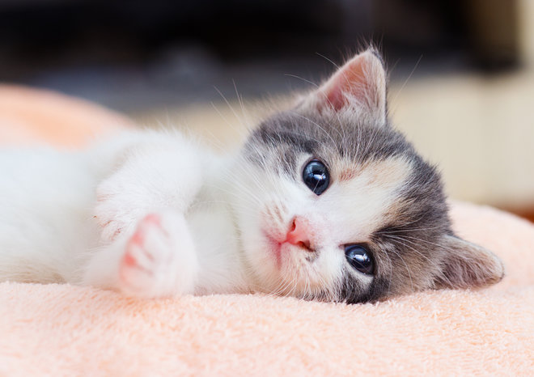

Cats are great pets , they are very furry and soft animals, have 4 legs, pointy ears, and are very cute and have many breeds "I like the tabby cat a lot."
Cats are carnivores, they hunt at night, and eat these things.
| Breed | Tabby | American Shorthair | Pershin |
| Country | Australia | USA | USA & Europe |
| Coat | Short | Short | Long |
| Picture |  |
 |
 |